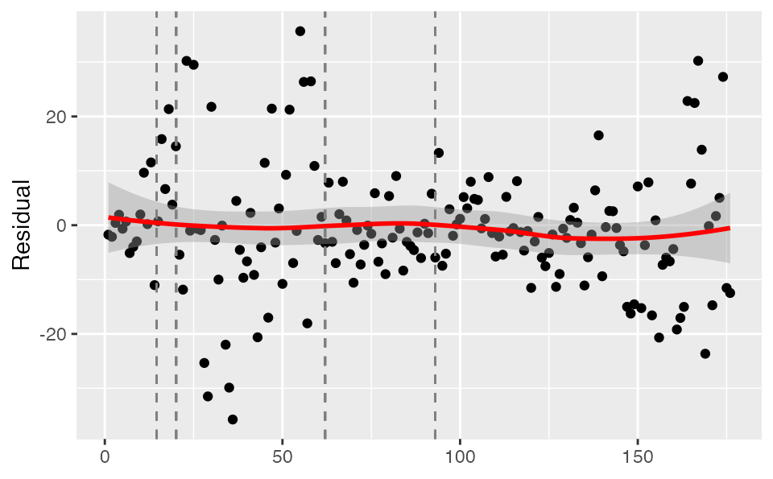
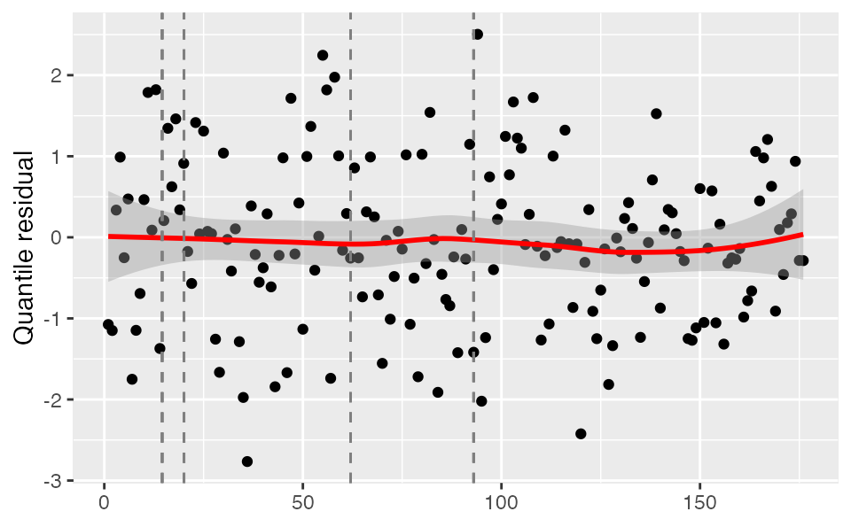
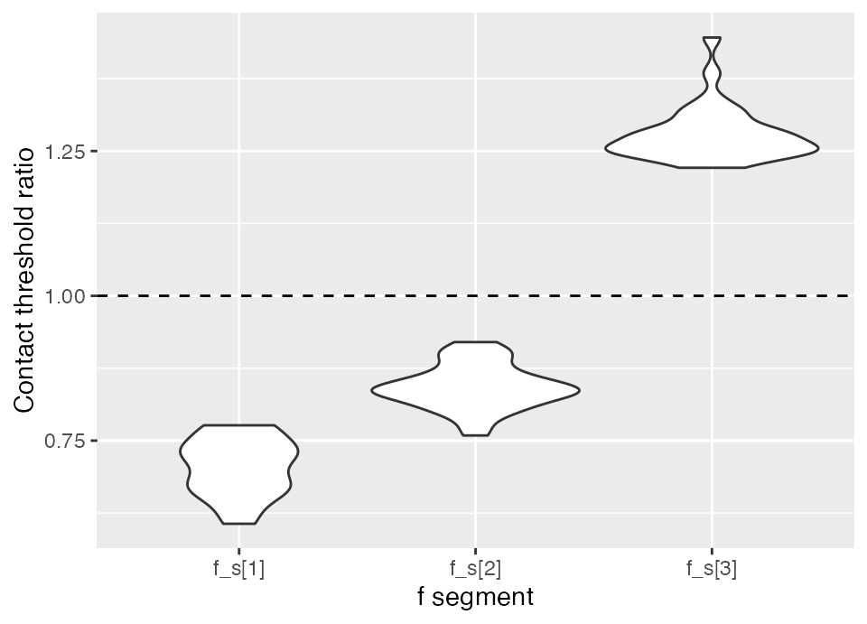
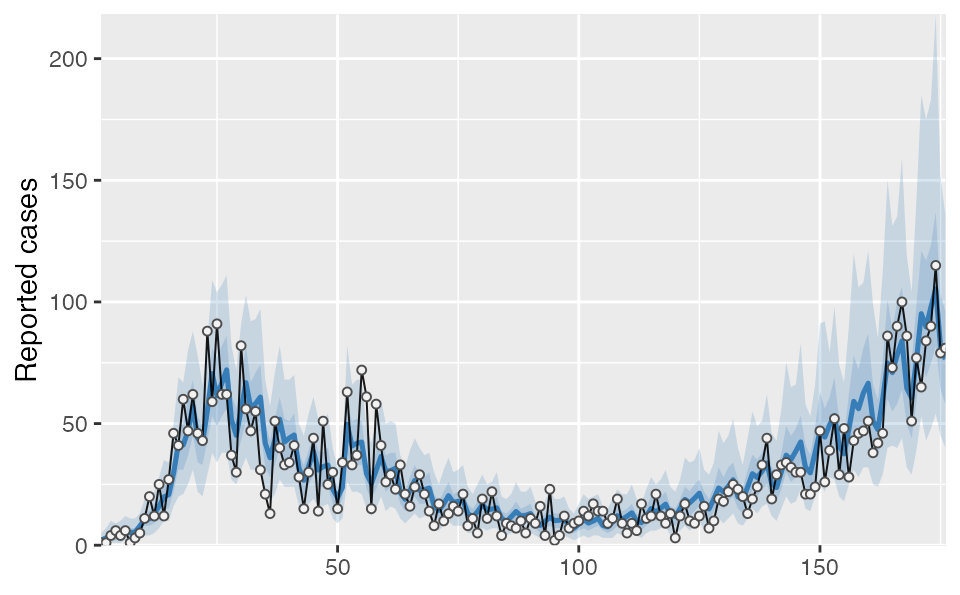
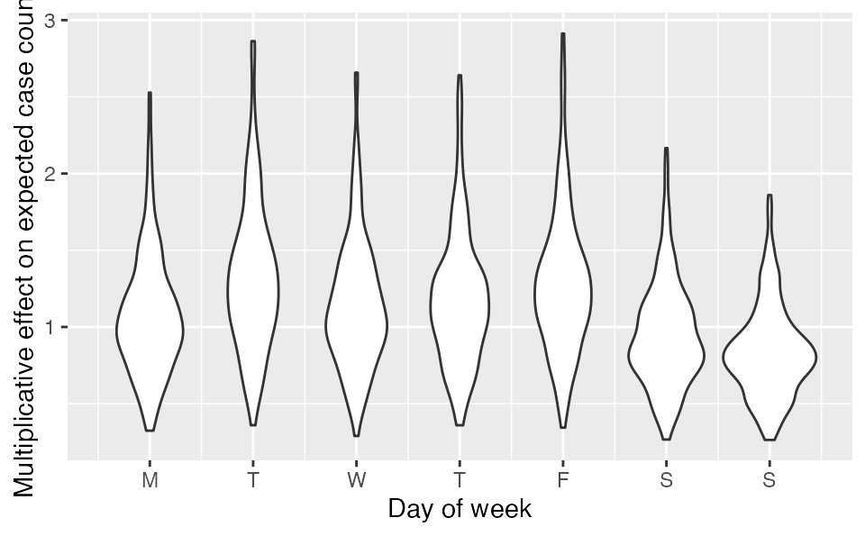
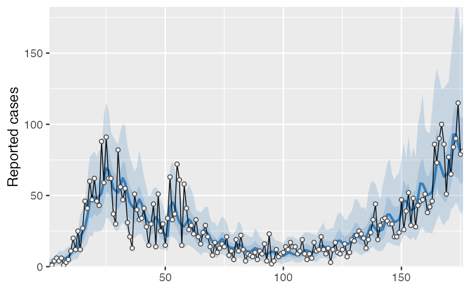
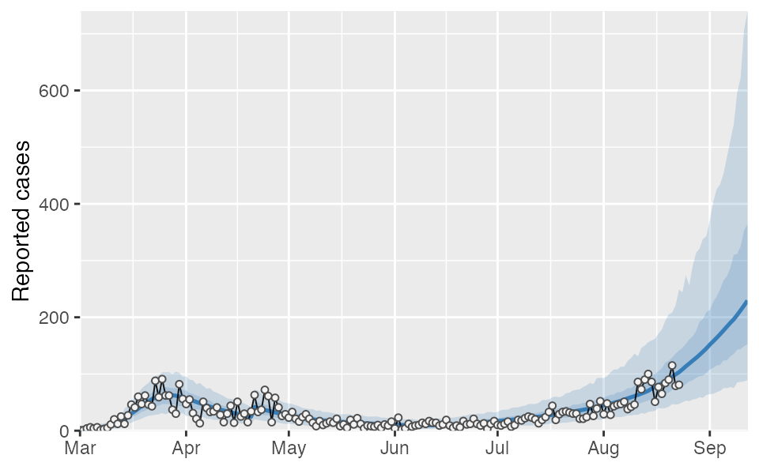
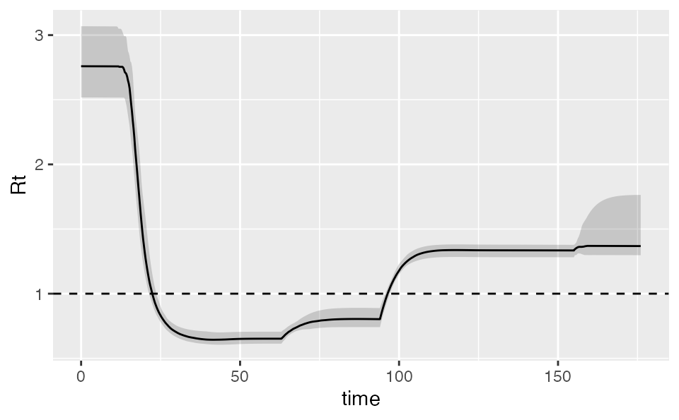

Fitting COVID-19 case data with covidseir
fitting-case-data.RmdThe covidseir R package can be installed from https://github.com/seananderson/covidseir.
Data
First, we will read in the British Columbia, Canada COVID-19 reported-case data. This comes from http://www.bccdc.ca/Health-Info-Site/Documents/BCCDC_COVID19_Dashboard_Case_Details.csv.
dat <- structure(list(value = c(1, 1, 4, 6, 4, 6, 1, 3, 5, 11, 20, 12,
25, 12, 27, 46, 41, 60, 47, 62, 46, 43, 88, 59, 91, 62, 62, 37,
30, 82, 56, 47, 55, 31, 21, 13, 51, 40, 33, 34, 41, 28, 15, 30,
44, 14, 51, 25, 30, 15, 34, 63, 33, 37, 72, 61, 15, 58, 41, 26,
29, 23, 33, 21, 16, 24, 29, 21, 14, 8, 17, 10, 13, 16, 14, 21,
8, 11, 5, 19, 11, 22, 12, 4, 9, 8, 7, 10, 5, 11, 9, 16, 4, 23,
2, 4, 12, 7, 9, 10, 14, 12, 17, 14, 14, 9, 11, 19, 9, 5, 9, 6,
17, 11, 12, 21, 12, 9, 13, 3, 12, 17, 10, 9, 12, 16, 7, 10, 19,
18, 22, 25, 23, 20, 13, 19, 24, 33, 44, 19, 29, 33, 34, 32, 30,
30, 21, 21, 24, 47, 26, 39, 52, 29, 48, 28, 43, 46, 47, 51, 38,
42, 46, 86, 73, 90, 100, 86, 51, 77, 65, 84, 90, 115, 79, 81),
day = 1:176), row.names = c(NA, -176L),
class = "data.frame")
dat <- dplyr::as_tibble(dat)
dat$date <- ymd("2020-03-01") + dat$day - 1
dat
#> # A tibble: 176 x 3
#> value day date
#> <dbl> <int> <date>
#> 1 1 1 2020-03-01
#> 2 1 2 2020-03-02
#> 3 4 3 2020-03-03
#> 4 6 4 2020-03-04
#> 5 4 5 2020-03-05
#> 6 6 6 2020-03-06
#> 7 1 7 2020-03-07
#> 8 3 8 2020-03-08
#> 9 5 9 2020-03-09
#> 10 11 10 2020-03-10
#> # … with 166 more rows
Model setup
Sampling fraction
We need an estimate of the fraction of positive cases that are sampled/detected. This could be based on serology testing and known changes in testing policy. In this case, we are basing the sampled fractions on known dates of changes in testing policy combined with numbers of hospitalizations and an assumed hospitalization rate from a model fit elsewhere.
We will set up a vector of assumed sampling fractions with one value per day and changes on the appropriate days:
Contact rate breakpoints
We then need to set up a vector of ‘f’ (contact rate fraction) segment IDs. These start at 0 (before any social distancing) and increment by 1 every time we want to estimate a new contact rate, say because of known social distancing policy changes. Here we will estimate new ‘f’ segments starting May 1 and June 1. Note that the vector needs to switch from 0 to 1 before the first estimated date of the social distancing ramp. The start and end of the ramp are estimated parameters. It is simplest to start the value 1 on the 2nd day.
f_seg <- c(0, rep(1, nrow(dat) - 1))
day_new_f <- which(dat$date == ymd("2020-05-01"))
f_seg[seq(day_new_f, length(f_seg))] <- 2
day_ch <- which(dat$date == ymd("2020-06-01"))
f_seg[seq(day_ch, length(f_seg))] <- 3
f_seg
#> [1] 0 1 1 1 1 1 1 1 1 1 1 1 1 1 1 1 1 1 1 1 1 1 1 1 1 1 1 1 1 1 1 1 1 1 1 1 1
#> [38] 1 1 1 1 1 1 1 1 1 1 1 1 1 1 1 1 1 1 1 1 1 1 1 1 2 2 2 2 2 2 2 2 2 2 2 2 2
#> [75] 2 2 2 2 2 2 2 2 2 2 2 2 2 2 2 2 2 2 3 3 3 3 3 3 3 3 3 3 3 3 3 3 3 3 3 3 3
#> [112] 3 3 3 3 3 3 3 3 3 3 3 3 3 3 3 3 3 3 3 3 3 3 3 3 3 3 3 3 3 3 3 3 3 3 3 3 3
#> [149] 3 3 3 3 3 3 3 3 3 3 3 3 3 3 3 3 3 3 3 3 3 3 3 3 3 3 3 3Fitting the model
Now we can fit the SEIR model. This requires specifying a prior on ‘i0’ (people infected at initial point in time), the starting and ending of the ramp-in of social distancing (start_decline_prior and end_decline_prior), ‘R0’, and ‘f’. The f prior by default is mean 0.4 and SD 0.2 from a beta distribution and applies to all f segments. You can extend this prior to be different for each ‘f’ segment by using a matrix, which likely makes sense if you think that social distancing has relaxed over time. See ?fit_seir for details and default values.
In the following example, we will use rstan::optimizing() to find the MAP (maximum a posteriori probability) estimate combined with sampling from the covariance matrix to generate samples. Alternatives are variational Bayes ("VB") and full Bayesian NUTS MCMC sampling ("NUTS"). We strongly recommend NUTS sampling for final inference; however, the MAP estimate can be useful for model experimentation and is what we will use here in this vignette for speed:
fit <- covidseir::fit_seir(
daily_cases = dat$value,
samp_frac_fixed = samp_frac,
f_seg = f_seg,
i0_prior = c(log(8), 1),
e_prior = c(0.8, 0.05),
start_decline_prior = c(log(15), 0.1),
end_decline_prior = c(log(22), 0.1),
f_prior = cbind(c(0.4, 0.5, 0.6), c(0.2, 0.2, 0.2)),
R0_prior = c(log(2.6), 0.2),
N_pop = 5.1e6, # BC population
iter = 500, # number of posterior samples
fit_type = "optimizing" # for speed only
)
#> Finding the MAP estimate.
print(fit)
#> MAP estimate:
#> i0 R0 start_decline end_decline f_s[1]
#> 6.63 3.19 13.61 19.15 0.34
#> f_s[2] f_s[3] phi[1] e
#> 0.42 0.63 9.55 0.82
#> Mean in constrained space of MVN samples:
#> i0 R0 start_decline end_decline f_s[1]
#> 7.34 3.20 13.63 19.14 0.35
#> f_s[2] f_s[3] phi[1] e
#> 0.42 0.63 9.68 0.82
#> SD in constrained space of MVN samples:
#> i0 R0 start_decline end_decline f_s[1]
#> 3.84 0.24 1.18 1.50 0.05
#> f_s[2] f_s[3] phi[1] e
#> 0.05 0.04 1.60 0.05Visualizing the model fit
If you would like, you can choose to use parallel processing for the projections:
future::plan(future::multisession)Now we will take the fitted model and calculate the corresponding model predictions. This can be slow, especially with future projections, and so we only use the first 50 posterior samples for this quick vignette example:
proj <- covidseir::project_seir(fit, iter = 1:50)
proj
#> # A tibble: 8,800 x 7
#> day data_type mu y_rep phi .iteration forecast
#> <int> <int> <dbl> <dbl> <dbl> <int> <lgl>
#> 1 1 1 2.21 1 9.35 1 FALSE
#> 2 2 1 2.55 3 9.35 1 FALSE
#> 3 3 1 2.93 0 9.35 1 FALSE
#> 4 4 1 3.38 2 9.35 1 FALSE
#> 5 5 1 3.89 7 9.35 1 FALSE
#> 6 6 1 4.47 7 9.35 1 FALSE
#> 7 7 1 5.15 4 9.35 1 FALSE
#> 8 8 1 5.93 10 9.35 1 FALSE
#> 9 9 1 6.82 9 9.35 1 FALSE
#> 10 10 1 7.85 9 9.35 1 FALSE
#> # … with 8,790 more rowsThen we will take the posterior samples, re-sample 20 times from the negative binomial observation model to generate smoother predictions, and transform the output into a tidy data frame for plotting:
tidy_proj <- covidseir::tidy_seir(proj, resample_y_rep = 20)
tidy_proj
#> # A tibble: 176 x 15
#> # Groups: data_type [1]
#> data_type day y_rep_0.05 y_rep_0.25 y_rep_mean y_rep_0.50 y_rep_0.75
#> <int> <int> <dbl> <dbl> <dbl> <dbl> <dbl>
#> 1 1 1 0 1 2.79 3 4
#> 2 1 2 0 2 3.01 3 4
#> 3 1 3 1 2 3.46 3 5
#> 4 1 4 1 2 4.02 4 5
#> 5 1 5 1 3 4.74 4 6
#> 6 1 6 1 3 5.23 5 7
#> 7 1 7 2 4 6.05 6 8
#> 8 1 8 2 4 6.90 6 9
#> 9 1 9 2 5 7.99 8 10
#> 10 1 10 3 6 9.10 9 12
#> # … with 166 more rows, and 8 more variables: y_rep_0.95 <dbl>, mu_0.05 <dbl>,
#> # mu_0.25 <dbl>, mu_mean <dbl>, mu_0.50 <dbl>, mu_0.75 <dbl>, mu_0.95 <dbl>,
#> # mu_0.5 <dbl>For plotting, we need to join a date column back on, since our projections only have a column for a numeric day. Here, we do that by making a look-up-table (lut).
first_day <- min(dat$date)
last_day <- 300 # how many days to create dates for
lut <- dplyr::tibble(
day = seq_len(last_day),
date = seq(first_day, first_day + length(day) - 1, by = "1 day")
)
tidy_proj <- dplyr::left_join(tidy_proj, lut, by = "day")
dplyr::glimpse(tidy_proj)
#> Rows: 176
#> Columns: 16
#> Groups: data_type [1]
#> $ data_type <int> 1, 1, 1, 1, 1, 1, 1, 1, 1, 1, 1, 1, 1, 1, 1, 1, 1, 1, 1, 1,…
#> $ day <int> 1, 2, 3, 4, 5, 6, 7, 8, 9, 10, 11, 12, 13, 14, 15, 16, 17, …
#> $ y_rep_0.05 <dbl> 0, 0, 1, 1, 1, 1, 2, 2, 2, 3, 4, 4, 6, 10, 12, 14, 16, 19, …
#> $ y_rep_0.25 <dbl> 1.00, 2.00, 2.00, 2.00, 3.00, 3.00, 4.00, 4.00, 5.00, 6.00,…
#> $ y_rep_mean <dbl> 2.790, 3.014, 3.459, 4.017, 4.744, 5.228, 6.052, 6.897, 7.9…
#> $ y_rep_0.50 <dbl> 3, 3, 3, 4, 4, 5, 6, 6, 8, 9, 10, 11, 13, 23, 25, 29, 34, 3…
#> $ y_rep_0.75 <dbl> 4, 4, 5, 5, 6, 7, 8, 9, 10, 12, 14, 15, 17, 29, 33, 38, 43,…
#> $ y_rep_0.95 <dbl> 6.00, 7.00, 7.00, 8.00, 10.00, 11.00, 12.00, 13.05, 15.00, …
#> $ mu_0.05 <dbl> 1.940017, 2.262073, 2.637575, 3.075394, 3.585872, 4.181068,…
#> $ mu_0.25 <dbl> 2.388844, 2.724943, 3.114197, 3.653249, 4.256028, 4.885265,…
#> $ mu_mean <dbl> 2.703721, 3.093685, 3.540351, 4.052047, 4.638325, 5.310156,…
#> $ mu_0.50 <dbl> 2.735628, 3.130977, 3.579482, 4.071457, 4.657446, 5.332551,…
#> $ mu_0.75 <dbl> 3.052195, 3.455569, 3.927147, 4.408022, 4.969178, 5.631357,…
#> $ mu_0.95 <dbl> 3.305713, 3.765812, 4.279633, 4.885128, 5.566922, 6.341548,…
#> $ mu_0.5 <dbl> 2.735628, 3.130977, 3.579482, 4.071457, 4.657446, 5.332551,…
#> $ date <date> 2020-03-01, 2020-03-02, 2020-03-03, 2020-03-04, 2020-03-05…You can plot the output however you would like; however, the covidseir package includes a built-in basic plotting function. The value_column and date_column must both be columns present in the projection and observed data.
covidseir::plot_projection(tidy_proj, obs_dat = dat,
value_column = "value", date_column = "date")
Checking model residuals
We can check the model fit residuals (here observed minus expected value):
plot_residuals(tidy_proj, obs_dat = dat, obj = fit)
Or randomized quantile residuals, which should be approximately normally distributed (but introduce some randomness within each integer observed value):
set.seed(1)
plot_residuals(tidy_proj, obs_dat = dat, obj = fit, type = "quantile")
We can extract the (randomized quantile) residuals themselves to plot them however we would like or check their distribution:
set.seed(1)
resid <- plot_residuals(tidy_proj, obs_dat = dat, obj = fit, type = "quantile",
return_residuals = TRUE)
hist(resid)Projections
If we wanted to make a projection assuming that social distancing were to change in the future, we could do that as follows. For this example we will project 45 days into the future and change the contact ratio ‘f’ to be two-thirds of its final estimated value (‘f’ segment 3) starting after 5 days from the last observation. We will use only the first 50 posterior samples for speed of this example.
days_project <- 45
day_start_reduction <- 5
proj2 <- covidseir::project_seir(
fit,
iter = 1:50,
forecast_days = days_project,
f_fixed_start = max(fit$days) + day_start_reduction,
f_multi = rep(0.67, days_project - day_start_reduction + 1),
f_multi_seg = 3 # which f segment to use
)
tidy_proj2 <- covidseir::tidy_seir(proj2, resample_y_rep = 30)
tidy_proj2 <- dplyr::left_join(tidy_proj2, lut, by = "day")
covidseir::plot_projection(tidy_proj2, obs_dat = dat,
value_column = "value", date_column = "date")Calculating the threshold for increase
We can also calculate the threshold for expected increases in prevalence. We estimate the threshold by determining which ‘f’ value gives a zero rate of growth using the following procedure:
- For a sequence of fractions of normal contacts (f), project the model posterior for N days into the future.
- Fit a linear regression to determine the slope of log(prevalence) vs. time for the last X days of the projection period for each of the f values.
- Fit a linear regression to the slopes from the previous step against the fraction of normal contacts.
- Use this fitted regression line to determine what fractional normal contacts would result in an expected change in log prevalence of zero over time based on where the regression line crosses 0 on the y-axis.
threshold <- covidseir::get_threshold(fit, iter = 1:30,
fs = seq(0.3, 0.8, length.out = 4))
#> Projecting 0.3
#> Projecting 0.47
#> Projecting 0.63
#> Projecting 0.8We need to check that the above plot looks reasonable to fit a straight line through so we can extrapolate the point at which the slope values cross zero. It is possible the upper ‘f’ values (fs) will cause the population to reach heard immunity, resulting in prevalence decreasing over time and negative slopes. In that case, it wouldn’t make sense to fit a straight line through the points and the upper limit of explored ‘f’ values or the number of forecasted days should be reduced. Here, it looks reasonable.
The output is a posterior distribution of the threshold:
hist(threshold)
We can calculate the ratio between the posterior ‘f’ values for each segment and the threshold:
f_ratios <- fit$post$f_s[seq_along(threshold), ] / thresholdHere is an example of visualizing the output:
reshape2::melt(f_ratios) %>%
ggplot(aes(Var2, value)) + geom_violin() +
geom_hline(yintercept = 1, lty = 2) +
xlab("f segment") + ylab("Contact threshold ratio")
Calculating Rt
We can also calculate the implied Rt. The output includes the various SEIR states:
rt <- covidseir::get_rt(fit, iter = 1:50)
dplyr::glimpse(rt)
#> Rows: 41,250
#> Columns: 15
#> $ .iteration <int> 1, 1, 1, 1, 1, 1, 1, 1, 1, 1, 1, 1, 1, 1, 1, 1, 1, 1, 1, 1,…
#> $ time <dbl> -30.00, -29.75, -29.50, -29.25, -29.00, -28.75, -28.50, -28…
#> $ S <dbl> 1090214, 1090214, 1090214, 1090214, 1090214, 1090214, 10902…
#> $ E1 <dbl> 0.4106392, 0.4719332, 0.5291633, 0.5829634, 0.6339075, 0.68…
#> $ E2 <dbl> 0.10265971, 0.09954646, 0.09973748, 0.10233685, 0.10667358,…
#> $ I <dbl> 0.5132986, 0.5066202, 0.5000172, 0.4941709, 0.4895332, 0.48…
#> $ Q <dbl> 2.566493e-08, 6.217794e-03, 1.205053e-02, 1.752237e-02, 2.2…
#> $ R <dbl> 1.026597e-07, 2.565663e-02, 5.127889e-02, 7.687012e-02, 1.0…
#> $ Sd <dbl> 4009781, 4009781, 4009780, 4009780, 4009780, 4009779, 40097…
#> $ E1d <dbl> 1.510320, 1.735758, 1.946249, 2.144125, 2.331496, 2.510264,…
#> $ E2d <dbl> 0.3775798, 0.3661294, 0.3668319, 0.3763923, 0.3923427, 0.41…
#> $ Id <dbl> 1.887899, 1.863336, 1.839050, 1.817548, 1.800491, 1.788922,…
#> $ Qd <dbl> 9.439496e-08, 2.286889e-02, 4.432153e-02, 6.444685e-02, 8.3…
#> $ Rd <dbl> 3.775799e-07, 9.436442e-02, 1.886025e-01, 2.827264e-01, 3.7…
#> $ Rt <dbl> NA, NA, NA, NA, NA, NA, NA, NA, NA, NA, NA, NA, NA, NA, NA,…
ggplot(rt, aes(time, Rt, group = .iteration)) +
geom_line(alpha = 0.2, na.rm = TRUE) +
geom_hline(yintercept = 1, lty = 2)Calculating doubling time
We can calculate the prevalence doubling time:
dbl_time <- covidseir::get_doubling_time(fit, iter = 1:50)
hist(dbl_time)The first plot should look linear and increasing for this to make sense.
Adding covariates
We can add covariates that affect the expected log case counts each day through the model matrix argument X. This can be useful, for example, to model a weekly pattern in reported case counts. One simple approach would be to model each day of the week as an independent factor:
# Set up so the first day is a Sunday:
dow <- data.frame(day_of_week = rep(gl(7, 1), 999)[-c(1:6)])
dow <- dow[seq_len(nrow(dat)), , drop = FALSE]
X <- model.matrix(~ 0 + day_of_week, dow)
fit_dow <- fit_seir(
daily_cases = dat$value,
samp_frac_fixed = samp_frac,
f_seg = f_seg,
i0_prior = c(log(8), 1),
e_prior = c(0.8, 0.05),
start_decline_prior = c(log(15), 0.1),
end_decline_prior = c(log(22), 0.1),
f_prior = cbind(c(0.4, 0.5, 0.6), c(0.2, 0.2, 0.2)),
N_pop = 5.1e6,
iter = 200,
fit_type = "optimizing",
X = X # <- the model matrix
)
#> Finding the MAP estimate.
covidseir::project_seir(fit_dow, iter = 1:40) %>%
covidseir::tidy_seir() %>%
covidseir::plot_projection(obs_dat = dat,
value_column = "value", date_column = "day"
)
The resulting beta coefficients represent an additive effect in log space or a multiplicative effect on expected case counts if exponentiated:
purrr::map_dfr(1:7, ~
tibble(dow = .x, b = fit_dow$post[[paste0("beta[", .x, "]")]])) %>%
ggplot(aes(dow, exp(b), group = dow)) + geom_violin() +
scale_x_continuous(breaks = 1:7, labels = c("M", "T", "W", "T", "F", "S", "S")) + ylab("Multiplicative effect on expected case counts") +
xlab("Day of week")
Another approach would be to use a cyclical spline from the mgcv package. This is a spline where the value between Monday and Sunday are forced to join:
library(mgcv)
#> Loading required package: nlme
#>
#> Attaching package: 'nlme'
#> The following object is masked from 'package:dplyr':
#>
#> collapse
#> This is mgcv 1.8-35. For overview type 'help("mgcv-package")'.
dow$day_of_week <- as.numeric(dow$day_of_week)
dow$cases <- dat$value
mgam <- gam(cases ~ 0 + s(day_of_week, bs = "cc", k = 4),
data = dow, family = nb)
X <- model.matrix(mgam)
fit_gam <- fit_seir(
daily_cases = dat$value,
samp_frac_fixed = samp_frac,
f_seg = f_seg,
i0_prior = c(log(8), 1),
e_prior = c(0.8, 0.05),
start_decline_prior = c(log(15), 0.1),
end_decline_prior = c(log(22), 0.1),
f_prior = cbind(c(0.4, 0.5, 0.6), c(0.2, 0.2, 0.2)),
N_pop = 5.1e6,
iter = 200,
fit_type = "optimizing",
X = X # <- the model matrix
)
#> Finding the MAP estimate.
covidseir::project_seir(fit_gam, iter = 1:40) %>%
covidseir::tidy_seir() %>%
covidseir::plot_projection(obs_dat = dat,
value_column = "value", date_column = "day"
)
Or the pattern could be modelled with a sine wave:
Ensemble modelling
We can ensemble multiple models. First, set up the ‘f’ segments:
f_seg <- c(0, rep(1, nrow(dat) - 1))
day_new_f <- which(dat$date == ymd("2020-05-01"))
f_seg[seq(day_new_f, length(f_seg))] <- 2
day_ch <- which(dat$date == ymd("2020-06-01"))
f_seg[seq(day_ch, length(f_seg))] <- 3
day_ch <- which(dat$date == ymd("2020-08-01"))
f_seg[seq(day_ch, length(f_seg))] <- 4
f_seg
#> [1] 0 1 1 1 1 1 1 1 1 1 1 1 1 1 1 1 1 1 1 1 1 1 1 1 1 1 1 1 1 1 1 1 1 1 1 1 1
#> [38] 1 1 1 1 1 1 1 1 1 1 1 1 1 1 1 1 1 1 1 1 1 1 1 1 2 2 2 2 2 2 2 2 2 2 2 2 2
#> [75] 2 2 2 2 2 2 2 2 2 2 2 2 2 2 2 2 2 2 3 3 3 3 3 3 3 3 3 3 3 3 3 3 3 3 3 3 3
#> [112] 3 3 3 3 3 3 3 3 3 3 3 3 3 3 3 3 3 3 3 3 3 3 3 3 3 3 3 3 3 3 3 3 3 3 3 3 3
#> [149] 3 3 3 3 3 4 4 4 4 4 4 4 4 4 4 4 4 4 4 4 4 4 4 4 4 4 4 4Fit the 2nd model:
fit2 <- covidseir::fit_seir(
daily_cases = dat$value,
samp_frac_fixed = samp_frac,
f_seg = f_seg,
i0_prior = c(log(8), 1),
e_prior = c(0.8, 0.05),
start_decline_prior = c(log(15), 0.1),
end_decline_prior = c(log(22), 0.1),
f_prior = cbind(c(0.4, 0.5, 0.6, 0.6), c(0.2, 0.2, 0.2, 0.2)),
R0_prior = c(log(2.6), 0.2),
N_pop = 5.1e6, # BC population
iter = 500, # number of samples
fit_type = "optimizing" # for speed only
)
#> Finding the MAP estimate.Project both:
proj1 <- covidseir::project_seir(fit, iter = 1:50, forecast_days = 20)
proj2 <- covidseir::project_seir(fit2, iter = 1:50, forecast_days = 20)Bind the 2 sets of posterior samples before calculating quantiles and joining on dates:
tidy_proj_ens <- dplyr::bind_rows(proj1, proj2) %>%
covidseir::tidy_seir() %>%
dplyr::left_join(lut, by = "day")And plot them:
covidseir::plot_projection(tidy_proj_ens, obs_dat = dat,
value_column = "value", date_column = "date")
Ensembles of Rt values
We can do the same with the Rt values:
rt2 <- covidseir::get_rt(fit2, iter = 1:50)
bind_rows(rt, rt2) %>% # bind the 2 models
filter(!is.na(Rt)) %>%
group_by(time) %>%
summarise(
lwr = quantile(Rt, probs = 0.05),
med = quantile(Rt, probs = 0.50),
upr = quantile(Rt, probs = 0.95)) %>%
ggplot(aes(time, med, ymin = lwr, ymax = upr)) +
geom_ribbon(alpha = 0.2) +
geom_line() +
geom_hline(yintercept = 1, lty = 2) +
ylab("Rt")